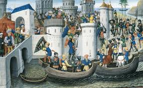

საქართველო XII საუკუნეში: ჯვაროსნული ომები
12 საუკუნე საქართველოს ისტორიაში ერთ-ერთი გადამწყვეტი პერიოდია. ამ დროს, საქართველო აძლიერებდა თავის პოლიტიკურ და ეკონომიკურ პოზიციებს, მაგრამ ამავე დროს მტრის თავდასხმებსაც განიცდიდა. ჯვაროსანთა ომები განსაკუთრებული მნიშვნელობის მქონე მოვლენაა, რადგან ეს იყო დრო, როცა საქართველოს ტერიტორიაზე დაიწყეს მტრის შემოჭრები.ჯვაროსნული თავდასხმები
12 საუკუნის დასაწყისში, საქართველო სერიოზული საფრთხეების წინაშე დადგა, როდესაც დასავლეთ ევროპის სამეფოები, რომლებმაც დაიწყეს ჯვაროსნული ომები ლეგენდარული წმინდა მიწის დასაბრუნებლად, საქართველოს ტერიტორიაზე ჩამოსვლისა და მტრის გამყარებისთვის მოემზადნენ. ისინი განსაკუთრებით სამცხე-ჯავახეთის, ზემო სვანეთის და სხვა რეგიონების წინააღმდეგ იწყებდნენ თავდასხმებს. 